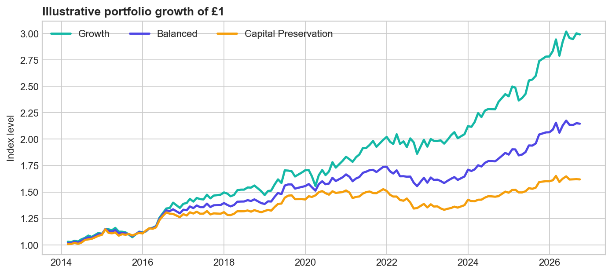
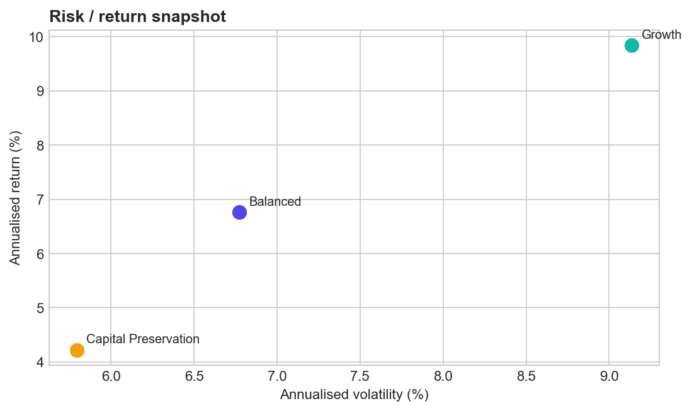
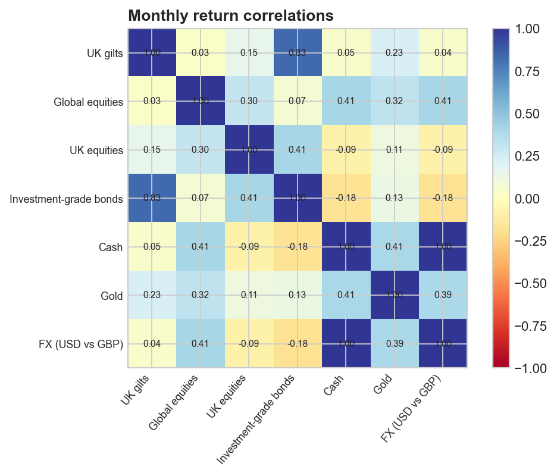

Wealth management · illustrative analysis
Client Portfolio & Macro Scenario Dashboard
Monthly total-return proxies · Jan 2014 to Sep 2026
For education only · not investment advice
For education only · not investment advice
Growth
9.8%
annualised return
9.1% vol · -9.0% max drawdown
Balanced
6.8%
annualised return
6.8% vol · -10.5% max drawdown
Capital Preservation
4.2%
annualised return
5.8% vol · -12.8% max drawdown
Portfolio paths

Risk / return

Macro stress test · estimated one-period impact
| Balanced | Capital Preservation | Growth | |
|---|---|---|---|
| Scenario | |||
| Equities -20% | -7.0% | -2.6% | -12.0% |
| GBP weaker 10% | 4.5% | 3.5% | 6.5% |
| Inflation higher | -3.7% | -3.6% | -3.1% |
| Rates +100bp | -3.2% | -3.7% | -2.3% |
| Rates -100bp | 3.2% | 3.7% | 2.3% |
Rate shocks use estimated gilt duration and a 4.5-year investment-grade bond assumption. Inflation and FX shocks are directional assumptions.
Rate sensitivity on a hypothetical £1m account
| gilt_modified_duration_years | gilt_dv01_gbp_per_bp | estimated_total_rate_dv01_gbp_per_bp | |
|---|---|---|---|
| portfolio | |||
| Growth | 6.476911 | 64.769112 | 109.769112 |
| Balanced | 6.476911 | 161.922780 | 251.922780 |
| Capital Preservation | 6.476911 | 226.691892 | 339.191892 |
DV01 is the approximate £ change for a 1bp move, based on target weights; it is not a live risk number.
Diversification check

Sources: Yahoo Finance adjusted monthly closes for proxy ETFs and GBP/USD; UK 10-year gilt yield is a transparent demonstration proxy included in the repository. See README and memo for methodology and suitability caveats.